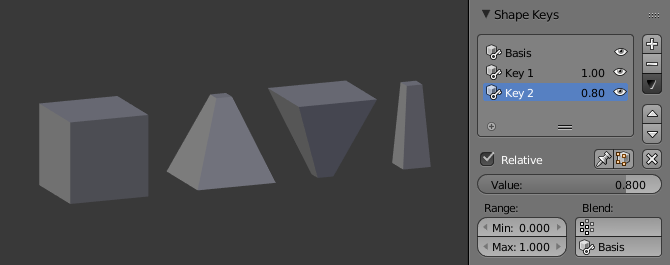

工作流程¶
相对形态键¶
- 在物体模式下，通过 Shape Key 嵌板的
+按钮，添加一个新的形态键。 Basis是基础（rest）形状。Key 1，Key 2，等，是新添加的形态键。- 切换到编辑模式，在 Shape Key 嵌板上选择
Key 1。 - 变形网格（不用删除或添加顶点）。
- 选择
Key 2，网格将被变为基础形状（basis）。 - 变化
Key 2，类似的，可以添加新的形态键。 - 切换回物体模式。
- 设置 "Key 1", "Key 2"的 值，等，观察形态键间的变化。
在下图中，从左到右依次显示物体模式下的形态键：Basis，Key 1，Key 2，和混合形态（Key 1 1.0，Key 2 0.8）。

相对形态键的例子。